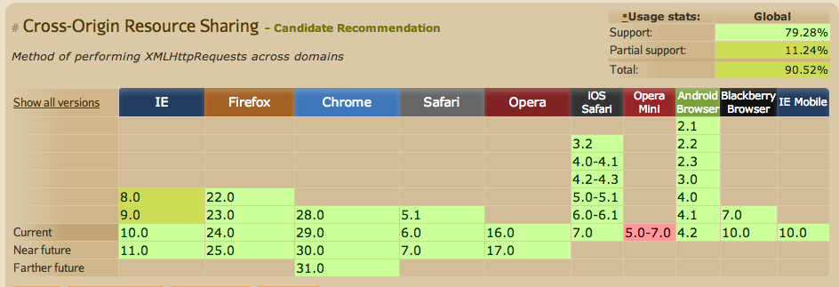
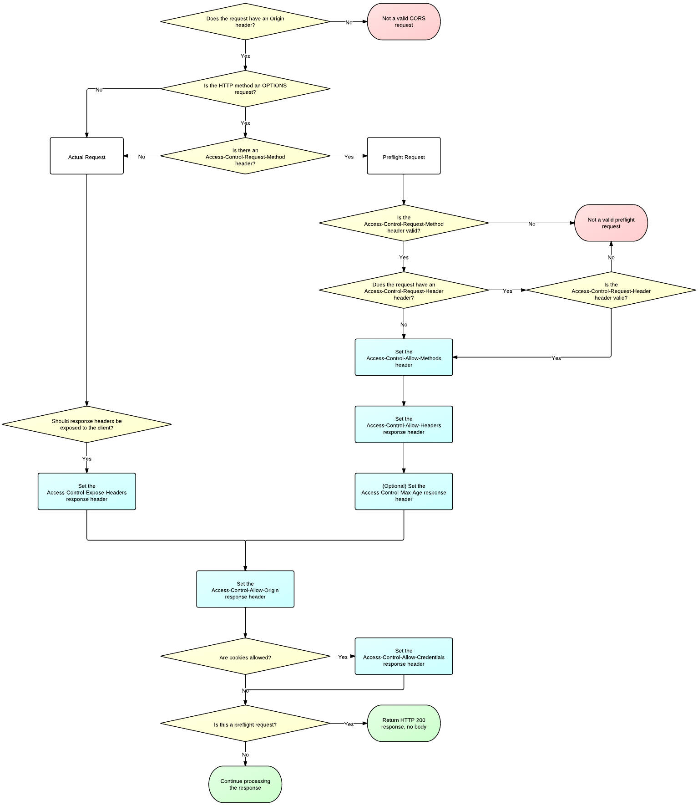

用Go实现CORS跨域资源共享的服务器支持
CORS简介
CORS全称Cross-Origin resource sharing， 即:跨域资源共享。
根据Wikipedia的解释，跨域资源共享（CORS）是一种机制，它允许在网页上的JavaScript的XMLHttpRequest访问到另一个域，而不是该JavaScript的原有域。 这样的“跨域”的要求，在CORS之前， 根据Web浏览器的同源原则，是被禁止通过Web浏览器的。CORS定义了一种方法，通过浏览器和服务器交互，以确定服务器是否允许跨源请求。这比严格遵守同源规则，是更强大的。但同时也是更安全的，比简单地允许所有这种跨域请求。（不太通顺么？其实是Google Translate的，我自己写得还不如这段..）
在CORS出现以前，已经有了多种方法实现跨域访问，比如JSONP等。所以本篇介绍的CORS也只是跨域访问的一种，任何技术都有其有点与缺点，需要根据实际应用场景来选择。
这里简单与JSONP对比一下，JSONP本质是通过JavaScript操作浏览器页面DOM创建Script对象，再将Script的src指向另一个域内的资源，服务器将数据伪装成为一段JavaScript代码来实现跨域的目的。这样的方式的天然限制是只能发起GET请求，对于有REST洁癖的人而言，这是一种折磨。此外，还可以想象存在的安全隐患：“由远程服务器发送过来的JavaScript...”，中间的漏洞无数。
CORS的限制是需要浏览器的支持，目前的支持情况尚属乐观：

CORS的机制
对前端而言，依旧使用XMLHttpRequest对象（IE使用XDomainRequest），增加了参数和响应事件，整体变化不大。这是因为浏览器负责了与服务器的额外交互，对JavaScript编写者而言，这些都是不可见的。
对服务器端，就要具体研究到CORS的两种流程了：
- 简单请求
- 不那么简单的请求
简单请求：
任何简单请求必须满足一系列限制，包括HTTP Method、HTTP Headers等，原则上，这个限制范围内的请求，浏览器在CORS机制以前就可以发出的。比如：JSONP可以发出的跨域GET请求，或者HTML表单可以发出的POST请求。
简单请求的处理：
对于简单的CORS请求，最简单的处理方法是，增加以下一行到你的Response Header里
Access-Control-Allow-Origin: *
用Go的方法就是
func setAllowOrigin(w http.ResponseWriter, r *http.Request) {
w.Header().Add("Access-Control-Allow-Origin", "*")
return
}
其中，Access-Control-Allow-Origin是指可以跨域访问本地资源的源域。
如果你还想处理POST、PUT、GET这些复杂请求，或者更精确的控制CORS，比如允许的源范围，是否允许Cookie，那就要继续往下看了
不那么简单的请求
对于任何非简单请求，浏览器会先与服务器进行沟通，达成一致后，再发出实际请求。
这沟通的方式就是：
Preflight请求
在发起实际请求前，浏览器首先通过OPTIONS方式（这样才能从任何服务器收到响应）：
OPTIONS /cors HTTP/1.1
Origin: http://api.bob.com
Access-Control-Request-Method: PUT
Access-Control-Request-Headers: X-Custom-Header
其中，
Access-Control-Request-Method是浏览器想要发出的请求类型，Access-Control-Request-Headers是实际请求发送过来时的额外的Header类型，这些参数都是用逗号分割的多值字符串。
Preflight响应
服务器端响应Preflight Request如下：
Access-Control-Allow-Origin: http://api.bob.com
Access-Control-Allow-Methods: GET, POST, PUT
Access-Control-Allow-Headers: X-Custom-Header
Content-Type: text/html; charset=utf-8
其中，
Access-Control-Allow-Origin为CORS响应标配。Access-Control-Allow-Methods和Access-Control-Allow-Headers是服务器端支持的方法和头信息。值得注意的是，这里应该填写全集，而非对应Preflight请求里的项目。
此外，
Access-Control-Max-Age是告诉浏览器多少秒以内，不需要再请求Preflight.Access-Control-Allow-Credentials是告诉浏览器是否支持Cookie
Preflight响应: 沟通失败
如果Preflight请求发来的权限超过了服务器所支持的，我们该如何回复呢？
方法是：忽略掉Access-Control-Allow-Origin这个全系标配即可，就像一个普通HTTP 200返回，如此这般浏览器就不会发起实际请求了。
// invalid cors request!
Content-Type: text/html; charset=utf-8
实际请求与响应
当浏览器收到Preflight Request以后，确认服务器端支持CORS无误，就到了发起实际请求的步骤。
实际请求：
PUT /cors HTTP/1.1
Origin: http://api.bob.com
Host: api.alice.com
X-Custom-Header: value
Accept-Language: en-US
Connection: keep-alive
User-Agent: Mozilla/5.0...
实际响应：
Access-Control-Allow-Origin: http://api.bob.com
Content-Type: text/html; charset=utf-8
这里与普通的请求就相差不多了， Origin是请求的标配，Access-Control-Allow-Origin是响应的标配。
交互过程：

TL;DR ?来点简单的
服务器响应流程图
如果你觉得上文太长了， 其实一幅图就可以理清过程：

如何用Go语言实现？
按照上述流程与图，通过判断Request Header和写Response Header实现, 比如最开始判断是Preflight还是Actual Request
func (cors *Cors) ServeHTTP(w http.ResponseWriter, r *http.Request) {
if origin := r.Header.Get("Origin"); origin == "" {
cors.corsNotValid(w, r)
return
} else if r.Method != "OPTIONS" {
//actual request.
cors.actualRequest(w, r)
return
} else if acrm := r.Header.Get("Access-Control-Request-Method"); acrm == "" {
//actual request.
cors.actualRequest(w, r)
return
} else {
//preflight request.
cors.preflightRequest(w, r)
return
}
}
或者找一个现成的实现，比如：
gocors
gocors 是我实现的一个简单的CORS的工具集
用法是：
import (
"github.com/semicircle/gocors"
...
)
...
cors := gocors.New()
http.Handle("/", cors.Handler(x))
...
对于任何的http.Handler x, 只要替换成 cors.Handler(x)，那么这个Handler就会具有接受CORS Request的能力.
更多详细的说明与配置请阅读gocors文档。
感谢
感谢永远放在一个大标题下：
2. http://www.html5rocks.com/en/tutorials/cors/ 大部分原理其实是这篇的翻译和缩写
3. http://www.test-cors.org/ 我用这个测试了gocors